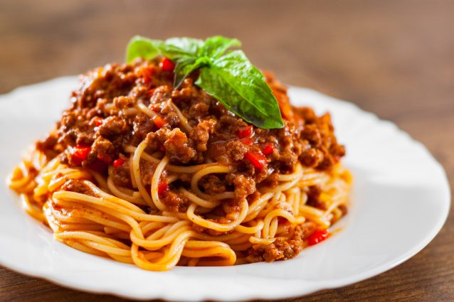

Spaghetti Bolognese

Description
The traditional recipe from Italy.
An easy family favourite recipe for any occasion.
Ingredients
- Spaghetti 400g
- Pork 100g
- Carrot 1
- Onion 1
- White Wine 100ml
- Tomato Sauce 200g
- Milk 50ml
- Oregano
- Basil Leaves
- Olive Oil
- Salt and Pepper
Steps
- Peel the onion and carrot, then chope them finely
- Pour some oil in the pot and set it over medium heat
- Add the onion and carrot with salt when the oil is hot
- Cook them for about 10 minutes
- Add the meat and mix it so it doesn't stick together in big pieces
- Add salt, pepper and oregano to taste
- When the meat is no longer pink, increase heat to high and add the white wine
- After 2-3 minutes lower the heat and add the tomato sauce and milk. Let it simmer for 20 minutes
- Put abundant water to boil and add the spaghetti with a teaspoon of salt
- When the spaghetti is ready, add it to the Bolognese sauce put with the fire off and mix well
- Serve with a few basil leaves. Enjoy!